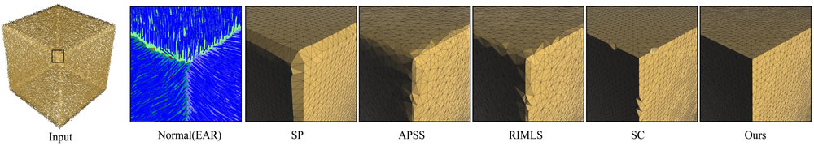

Robust Surface Reconstruction via Dictionary Learning
Shiyao Xiong1 Juyong Zhang1 Jianmin Zheng2 Jianfei Cai2 Ligang Liu1
1University of Science and Technology of China 2Nanyang Technological University
ACM Transactions on Graphics 2014
(Proc.SIGGRAPH ASIA 2014) |
|
Teaser: In our proposed reconstruction method, both the vertex positions and connectivity are improved as iterations increase (from left to right). |
| |
Abstract: |
Surface reconstruction from point cloud is of great practical importance in computer graphics. Existing methods often realize recon-struction via a few phases with respective goals, whose integration may not give an optimal solution.In this paper,to avoid the inherent limitations of multi-phase processing in the prior art, we propose a unified framework that treats geometry and connectivity construc-tion as one joint optimization problem. The framework is based on dictionary learning in which the dictionary consists of the vertices of the reconstructed triangular mesh and the sparse coding matrix encodes the connectivity of the mesh. The dictionary learning is formulated as a constrained l2,q-optimization (0<q<1) , aiming to find the vertex position and triangulation that minimize an energy function composed of point-to-mesh metric and regularization. Our formulation takes many factors into account within the same framework, including distance metric, noise/outlier resilience, sharp fea-ture preservation, no need to estimate normal, etc., thus providing a global and robust algorithm that is able to efficiently recover a piecewise smooth surface from dense data points with imperfec-tions. Extensive experiments using synthetic models, real world models, and publicly available benchmark show that our method improves the performance of the state-of-the-art in terms of accu-racy, robustness to noise and outliers, geometric feature and detail preservation, and mesh connectivity. |
| |
Results: |
|
| Figure 1:Reconstruction of the Merlion model by our proposed method and state-of-the-art: SP [Kazhdan and Hoppe 2013], APSS [Guen-nebaud and Gross 2007], RIMLS [ ¨Oztireli et al. 2009], and SC [Dey and Wang 2013]. It can be seen that our reconstruction can recover different levels of details better. |
| |
|  |
| Figure 2: Zoom-in results of the cube model with 4\% noise using different reconstruction methods. The EAR algorithm is used to resample the input point cloud for the four comparative methods. The second column visualizes the normal produced by EAR. |
| |
|
| Figure 3: Various reconstruction results of the chair model. The point cloud is scanned by Kinect. The EAR algorithm is used to resample the noisy input into a clean point set with reliable normals. |
| |
|
| Figure 4: Various reconstruction results of the FIFA model. The point cloud is scanned by a laser scanner. Note that here we use locally weighted PCA instead of EAR to estimate normals for the comparative methods. This is to demonstrate that the inferior performance of the comparative methods is not due to the inaccurate normal estimation of a particular preprocessing method. |
| |
| Acknowledgements: |
The authors thank Hao (Richard) Zhang, Daniel Cohen-Or and the reviewers for their valuable comments. We also thank Hao Li for his help to prepare the video. This work was supported by the NSF of China (Nos. 61303148, 61222206), NSF of AnHui Province, China (No. 1408085QF119), Specialized Research Fund for the Doctoral Program of Higher Education under contract (No. 20133402120002), One Hundred Talent Project of the Chinese Academy of Sciences, Singapore MoE AcRF Tier-1 Grant RG30/11, Multi-plAtform Game Innovation Centre (MAGIC) and BeingThere Centre funded by the Singapore National Research Foundation under its IDM Futures Funding Initiative and administered by the Interactive & Digital Media Programme Office, Media Development Authority. |
| |
| BibTex: |
@article{Xiong2014,
author = {Shiyao Xiong and Juyong Zhang and Jianmin Zheng and Jianfei Cai and Ligang Liu},
title = {Robust Surface Reconstruction via Dictionary Learning},
journal = {ACM Transactions on Graphics (Proc. SIGGRAPH Aisa)},
volume = {33},
issue = {6},
pages = {},
year = {2014}
} |
| |
| Downloads: |
| Disclaimer: The paper listed on this page is copyright-protected. By clicking on the paper link below, you confirm that you or your institution have the right to access the corresponding pdf file. |
|
|
| Copyright © 2014 GCL , USTC |
|